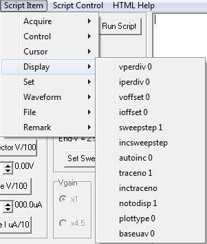

vperdiv n Sets the volts per division, for the trace plot, using the integer n (0 to 9).
- 0 = 0.01V/Div
- 1 = 0.02V/Div.
- 2 = 0.05V/Div.
- 3 = 0.1V/Div.
- 4 = 0.2V/Div.
- 5 = 0.5V/Div.
- 6 = 1.0V/Div.
- 7 = 2.0V/Div.
- 8 = 5.0V/Div.
- 9 = 10.0V/Div.
|
iperdiv n Sets the uA per division, for the trace plot, using the integer n (0 to 11).
- 0 = 0.001ma/Div.
- 1 = 0.002ma/Div.
- 2 = 0.005ma/Div.
- 3 = 0.01ma/Div.
- 4 = 0.02ma/Div.
- 5 = 0.05ma/Div.
- 6 = 0.1ma/Div.
- 7 = 0.2ma/Div.
- 8 = 0.5ma/Div.
- 9 = 1.0ma/Div.
- 10 = 2.0ma/Div.
- 11 = 5.0ma/Div.
|
voffset n Offsets the voltage zero point n divisions from the center of the curve trace plot. n is -10 to 10 divisions.
|
ioffset n Offsets the current zero point n divisions from the center of the curve trace plot. n is -10 to 10 divisions. |
sweepstep n Selects curve trace step
n where
n is 1 to 1024. The Sweep Step is also refered to as the positive pin. This is the same as changing the
Sweep Step spin edit button.
incsweepstep Adds one to the Sweep Step value.
autoinc 0 Un-checks the
Auto Inc. check box.
autoinc 1 Checks the
Auto Inc. check box. This turns off and on the auto increment of the Sweep Step after a Run Sweep acquisition.
traceno n Selects curve trace number
n where
n is 1 to 1024. The Trace Number is also refered to as the negative pin. This is the same as changing the
Trace No. spin edit button.
inctraceno Adds one to the Trace Number value.
notodisp n Sets the number of traces to overlay and display. Integer value
n is 1 to 10. Traces from Sweep Steps 1 through
n are displayed. Use this for showing transistor curves with the base stepped.
plottype 0 Enables the voltage-current X-Y display plot.
plottype 1 Enables the voltage, current X-t display plot. This is the same as selecting the
Plot Type X-Y and X-t radio buttons.
baseuav 0 Turns off trace text marking of the base voltage/current (dependent of switch settings)
baseuav 1 Turns on the trace text marking of the base voltage/current.
Script Item
Main